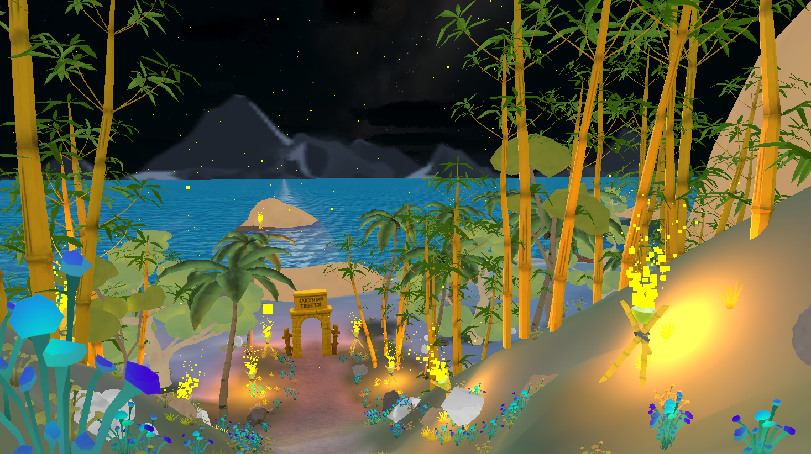
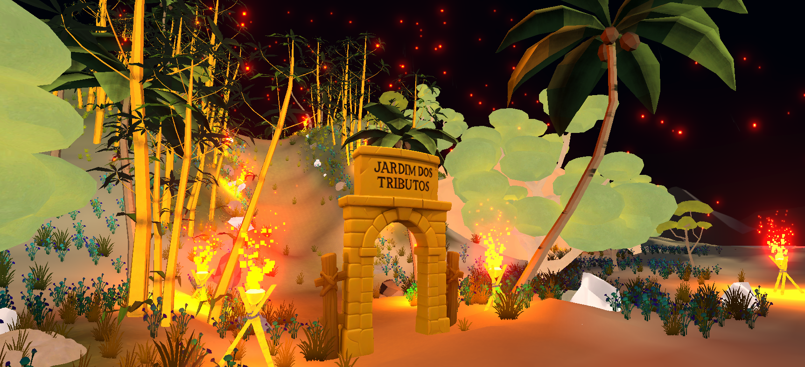
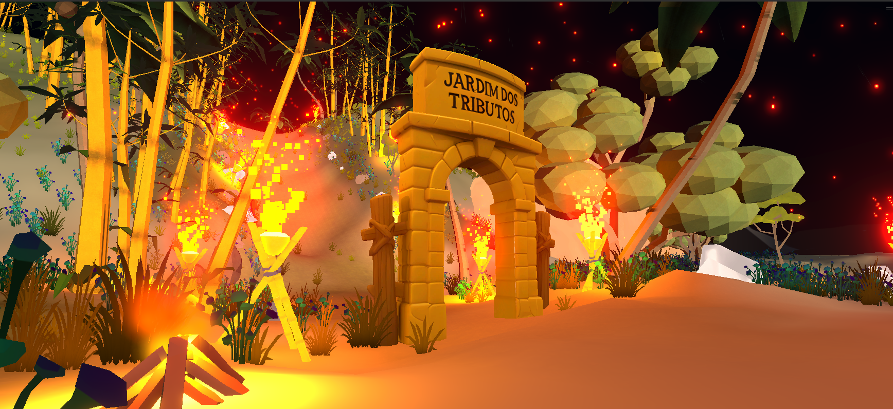
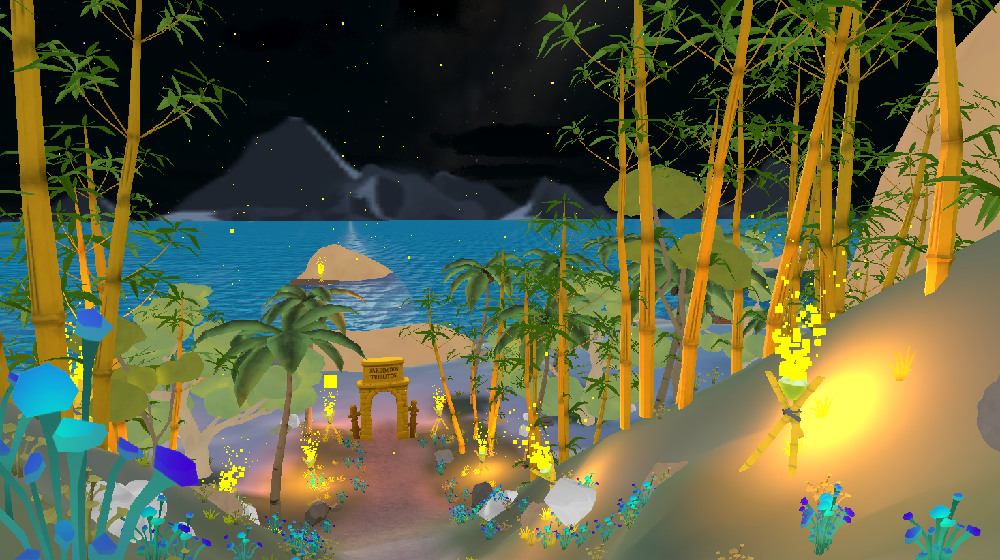
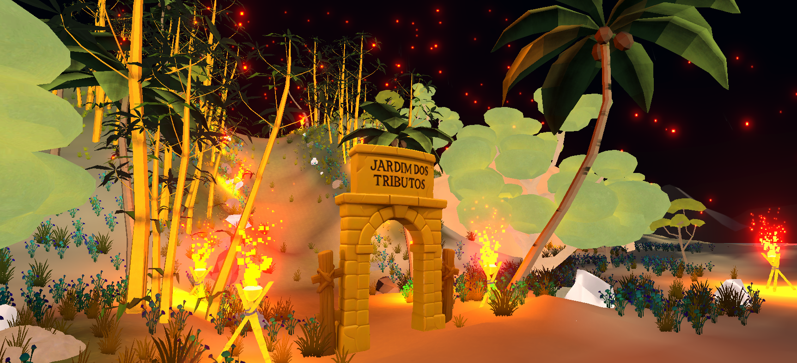
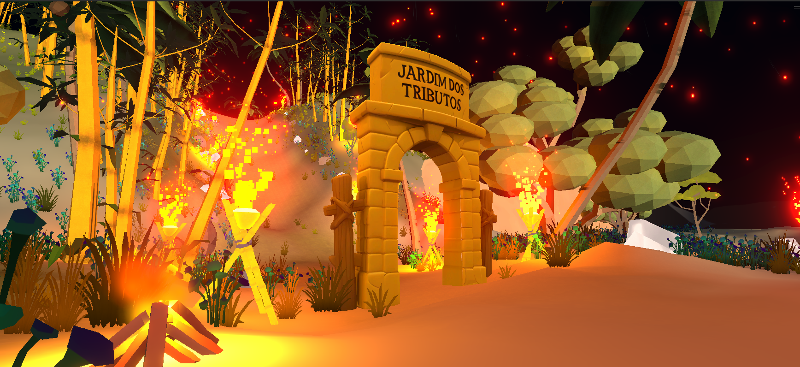

Um jogo narrativo e de sobrevivência onde cada contribuição importa.
Converse com os insetos, cumpra deveres, construa o futuro do jardim
e prepare-se para enfrentar o inverno mais desafiador de todos.
O Jardim dos Tributos é um jogo narrativo e de sobrevivência agrícola inspirado na obra de
Patrícia Luciene Bragamonte. Você inicia sua jornada em meio a um inverno rigoroso, exausto e sozinho, até
encontrar o pórtico do misterioso Jardim dos Tributos — um lugar onde uma comunidade organizada de insetos
vive
em harmonia, cada um cumprindo seu papel para enfrentar as estações.
Guiado pela sábia Lagarta Grinalda, você aprenderá sobre deveres, direitos e contribuições,
conversando com personagens únicos como a Formiga trabalhadora, o Gafanhoto vaidoso, a Borboleta sonhadora,
o Besouro musculoso, a Aranha habilidosa e a Cigarra vulnerável.
Seu objetivo é completar todas as missões antes que o inverno volte, coletando recursos, construindo
estruturas
essenciais, ajudando cada inseto e garantindo a sobrevivência da comunidade.
Quando cada um doa um pouco, todos recebem muito.
O futuro do jardim está em suas mãos.
Destaques
🌿 Mundo Vivo e Narrativo
Descubra um jardim cheio de histórias, encontros e personalidades
marcantes.
🧺 Coleta Estratégica
Ajude a Formiga Picotinha a coletar folhas e aprenda o valor da
colaboração.
🪵 Contribuições do Gafanhoto
Negocie com Galf e obtenha galhos essenciais para as futuras
construções.
🚧 Construção Solidária
Trabalhe com o Besouro, Borboleta e Tia Joaninha para erguer estruturas
vitais.
❄️ Ciclo das Estações
Supere desafios da primavera ao outono para garantir sobrevivência no
inverno.
🕸️ Armazenamento Inteligente
Construa galpões e drenos para manter o jardim seguro e preparado.
🎵 Ajuda aos Vulneráveis
Apoie a Cigarra Luna em sua sobrevivência e inspire novas melodias.
🌧️ Clima Dinâmico
Enfrente chuva, vento, neve, dia e noite em um ambiente vivo e
imersivo.
Imagens do Jogo
Explore os cenários e personagens encantadores do Jardim dos Tributos
 




